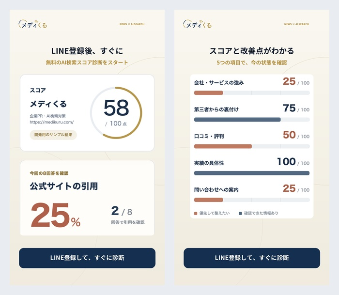
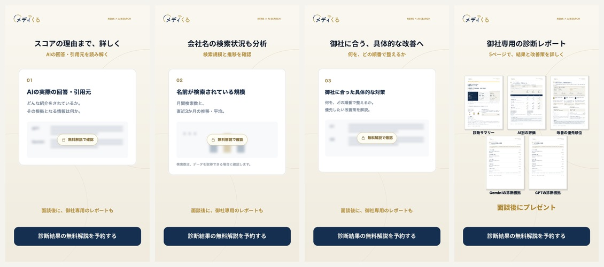
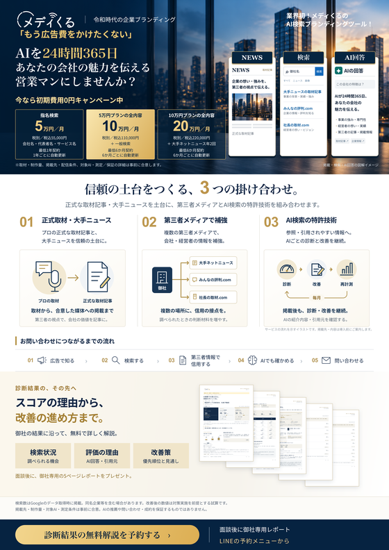
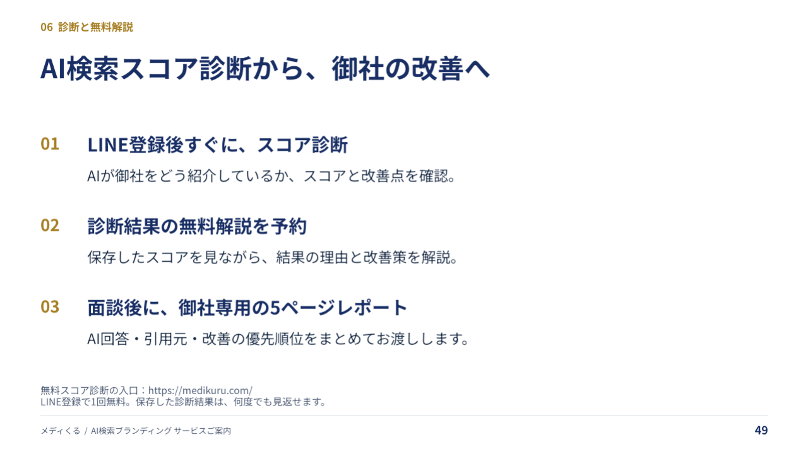

01｜紺・診断結果カード
 画像を保存 ↗
画像を保存 ↗従来のデザインを生かし、入口の案内を更新しました。
スコアと改善点を確認 → 診断結果の無料解説 → 面談後に御社専用の診断レポート。
LINE登録後すぐに無料診断を始められることを、ボタンの案内に反映しました。
音声を全編録り直しました。どちらも同じ話者で、全編を一律1.1倍速に調整しています。
登録前はスコアと5項目の改善点、診断後はAIの回答・引用元、検索規模・推移、具体的な改善策を実画面で紹介します。追加場面を画像でも確認できます。
追加した場面を画像で確認

追加した場面を画像で確認

未診断の方には無料診断、診断済みの方には無料解説へご案内します。無料解説の面談後に、御社専用の5ページレポートをプレゼント。診断済み版には5枚が広がる場面を追加しました。短編2本の音声はそのままです。MP4を保存してLINEに添付できます。
漆沢単独・竹之内対談を各2本。01・03は広告費からの集客訴求、02・04はAIを24時間365日の営業マンにする訴求です。元のカットと音声は維持しています。
入口では無料診断を案内。診断結果の無料解説でわかる内容と、面談後のレポートも整理しました。
LINE登録後すぐに診断をスタート。診断結果・改善点の確認から、無料解説と面談後の5ページレポートへ案内します。
LINE登録後すぐに診断をスタート。診断結果・改善点の確認から、無料解説と面談後の5ページレポートへ案内します。
公開前に、スマホ・PCの表示と実際のLINE接続を確認しています。
診断後の無料解説と、面談後に受け取れる5ページレポートを案内します。

最新の49ページ版をベースに、最後のご案内をスコア診断 → 無料解説 → 御社専用レポートへ更新しました。
